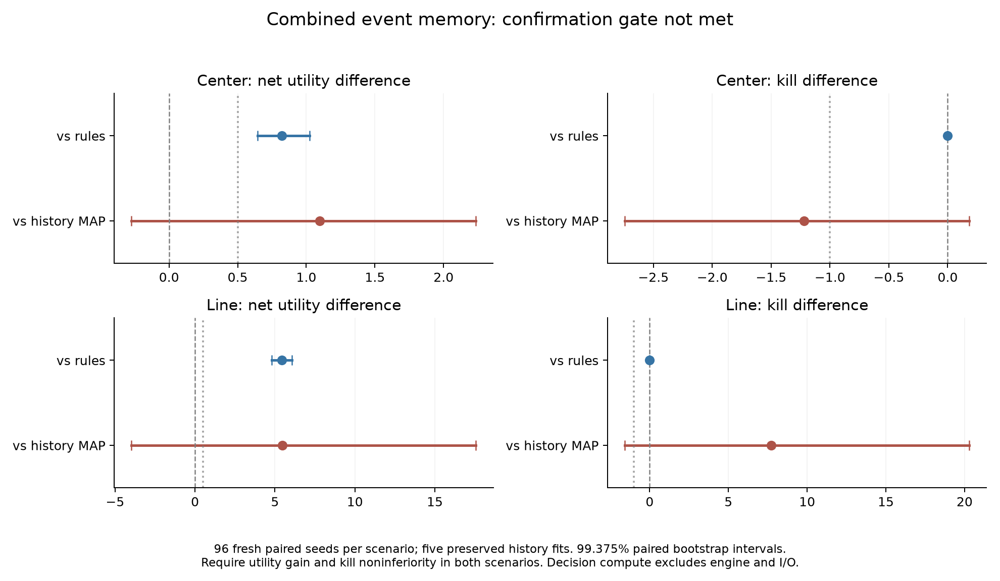

Fitted ensemble + event memory
First confirmation seed 101000: 6 kills, 9.20 game seconds, then death. Replay matches the preserved evaluation. Four-feature numerical heads, not the Qwen language model. Recording receipt
BROWSER DECISION LAB
Give a small local model context, a question, and candidate answers. Inspect every score.
About 350 MB of model weights on first use; allow about 1.5 GB of GPU memory. Downloads start only when you load the model.
No model loaded. Your inputs are processed in a local browser worker; model and runtime files come from public hosts.
Two to eight choices. Include an “insufficient information” option yourself if useful.
Load the model and score a decision.
All candidate scores will appear here.
Scores are relative to your supplied choices. They are uncalibrated and do not establish correctness or success. A small model may misunderstand your instruction.
The worker reads first-position candidate logits, then samples and discards one token. No explanation is generated. Timing includes tokenization, a model step, GPU-to-CPU readout, and scoring; first use can include compilation. Inputs are not saved by this app. Export is optional.
MEASURED, NOT ASSUMED
Three follow-up studies ran 6,408 fresh Doom episodes. A simple event-memory controller gained +0.82 net utility in Center and +5.43 in Line over rules, with kills identical across all 192 paired confirmation episodes. It saves fire commands under a fixed command cost. Every broader continuation gate still failed; better combat performance and ICLR novelty remain unproven.

The earlier 1,980-episode memory ablation also failed its continuation gate. The browser language model is separate from the numerical Doom controllers.
RECORDED LOCAL GAMEPLAY
These are recorded episodes, not a live browser Doom engine. These controllers consume structured game observations rather than pixels.
First confirmation seed 101000: 6 kills, 9.20 game seconds, then death. Replay matches the preserved evaluation. Four-feature numerical heads, not the Qwen language model. Recording receipt

Qwen3-4B on Apple Silicon. 2 kills, 8.17 game seconds; 20.61 wall seconds. Playback is at game speed. A single development demonstration.

A separate 5,253-parameter model: 16 kills in 23.1 game seconds. Trained to imitate a rule controller; it does not interpret arbitrary English.